pathfind – Great Circle Paths & Distances¶
And “Beam Heading”.
Plus, apparently, a database of 535 international lat/lon coordinates in "/hamcalc/latlong/LATLONG.DAT"
Bonus. The original latlong program that maintained a database of latitude and longitude information
Analysis¶
There are several feature sets here.
- A database of international locations.
- A simple great-circle range-and-bearing calculation.
- A tabular display showing 11 intermediate points along the creat circle route.
International Locations¶
This is seeded with 535 locations. There’s a kind of text filter, as well as a distance filter.
Also there’s an add-change-delete functionality, too.
This includes some clever search capability for locating a place by name or by location coordinates.
Great Circle Distance¶
From Chris Veness we have an implementation of the Haversine equations for great circle distance.
See http://www.movable-type.co.uk/scripts/latlong.html, © 2002-2010 Chris Veness
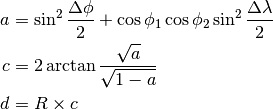
Generally,  is Latitude, and 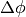 is difference
in latitude.
is Latitude, and 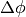 is difference
in latitude.  is Longitude, and is
difference in longitude.
is Longitude, and is
difference in longitude.
Example
50° 03’ 59” N 005° 42’ 53” W to 58° 38’ 38”N 003° 04’ 12”W
Distance = 968.9 Km
Great Circle Route¶
This is the “Orthodrome” route calculation problem.
The idea is to divide the great circle (orthodrome) into several sections and compute the loxodrome (rhumb line) between the points.
Too many points means lots of steering with only tiny changes in direction. Too few points means deviating from the ideal orthodromic course.
It appears that one follows this initial course until it “makes sense” to turn. One rule could be to locate a place where the next orthodromic bearing is a “significant” turn (e.g., 5°) away from the current bearing. Another rule could be to divide the trip into a fixed number of segments. Or divide the trip into segments of a fixed distance.
HamCalc divides the trip (arbitrarily) into 10 segments.
From Chris Veness we have this algorithm for computing the initial bearing,
 .
.
See http://www.movable-type.co.uk/scripts/latlong.html, © 2002-2010 Chris Veness
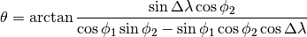
Example
35°N 45°E (Baghdad) to 35°N 135°E (Osaka) the initial bearing is 60°. The final bearing is the reciprocal, 120°.
Example
50° 03’ 59” N 005° 42’ 53” W to 58° 38’ 38”N 003° 04’ 12”W
Distance = 968.9 Km
Initial Bearing = 009° 07’ 11”
Final Bearing = 011° 16’ 31”
Great Circle Destination¶
From Chris Veness we have a calculation of a destination point on the create circle.
See http://www.movable-type.co.uk/scripts/latlong.html, © 2002-2010 Chris Veness
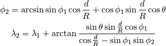
This gives us two coordinates, 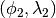 from a starting
point, , and a bearing, and a
distance,  .
.
53° 19’ 14”N 001° 43’ 47”W bearing 096° 01’ 18” distance 124.8 km
Final destination = 53° 11’ 18”N 000° 08’ 00”E
Rhumb Line Destination Point¶
For “Plane Sailing” (i.e., shorter distances) the “loxodrome” or Rhumb Line is approimately the same distance as the proper great circle route. Here’s Rhumb Line destination from a point given a range and bearing.
From Chris Veness we have this algorithm.
See http://www.movable-type.co.uk/scripts/latlong.html, © 2002-2010 Chris Veness
Angular Distance,  .
.
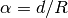
Latitude
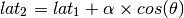
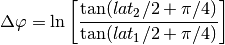
If this is an E:W line (i.e., ):
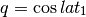
Otherwise:
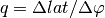
Longitude
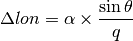
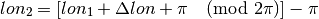
where ln is natural log is taking shortest route ().
 is the earth’s mean radius: 6,371.009 km (3,958.761 mi; 3,440.069 nm).
is the earth’s mean radius: 6,371.009 km (3,958.761 mi; 3,440.069 nm).
Rhumb Line Range and Bearing¶
For “Plane Sailing” (i.e., shorter distances) the “loxodrome” or Rhumb Line is approimately the same distance as the proper great circle route. Here’s Rhumb Line range and bearing.
See http://www.movable-type.co.uk/scripts/latlong.html, © 2002-2010 Chris Veness
If this is an E:W line (i.e., ):
Otherwise:
Distance, , and bearing, , are
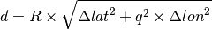
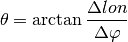
where is natural log, is taking shortest route ().
is the earth’s mean radius: 6,371.009 km (3,958.761 mi; 3,440.069 nm).
Implementation¶
Yes. The name of the calculation module differs from the legacy application, pathfind and gridsq.
The lot-long database management seems like it should be broken into two parts:
- Search by regular expression, soundex or coordinate. This is a proper part of pathfind.
- Add-Change-Delete maintenance. This is a separate program, latlong.
The distinction, however, is not crystal clear. For example, we can easily see a use case for adding a new location to the database while doing navigation calculations.
Legacy Introduction¶
GREAT CIRCLE PATHS, BEARINGS and DISTANCES by George Murphy VE3ERP
This program calculates Great Circle paths, bearings and distances
between any two points on earth, including those on or very close
to the same meridian, the equator, or the earth's poles. Several
intermediate points are also calculated as an aid in plotting the
path on a flat chart or map drawn in any projection. Solar time
difference between the two end points is also shown.
Also included is a data base of over 500 locations that can be
inserted into the program, and which can be edited by the user.
NOTE:
Enter latitude and longitude as decimal degrees, to the nearest 1/10th of a
degree, e.g. 47.3 for 48°20'. If you enter data with more than one place of
decimals the data entered will be used in all calculations, even though all
data displayed will be rounded-off to the nearest 1/10th degree.
1/10th of a degree longitude is equal to about 11 kilometres at the equator,
less than 6 Km. at 60° latitude.
Legacy Output¶
Path between A ..................................... 38.0°N 76.0°W Solar zone UTC-5
andB ..................................... 39.0°N 76.0°W
Solar zone UTC-5
Great Circle distance ( Naut.Miles ).... 60.0
Solar Time difference (hr:min).......... 0: 0
Bearing from A ......................... 0.00°
Bearing from B ......................... 180.00°
To A INTERMEDIATE PLOTS To B
└─« Naut.Miles«─ Bearing«─ ┌── From Plot ──┐ ─»Bearing ─» Naut.Miles »─┘
════════════════════════════════════════════════════════════════════════════════
-1 0.0 180.0° «─ 38.9°N 76.0°W ─» 0.0° 60.0
0 0.0 180.0° «─ 38.8°N 76.0°W ─» 0.0° 60.0
1 0.0 180.0° «─ 38.8°N 76.0°W ─» 0.0° 60.0 1/4 way
2 0.0 180.0° «─ 38.7°N 76.0°W ─» 0.0° 60.0 1/3 way
3 0.0 180.0° «─ 38.6°N 76.0°W ─» 0.0° 60.0
4 0.0 180.0° «─ 38.5°N 76.0°W ─» 0.0° 60.0 1/2 way
5 0.0 180.0° «─ 38.4°N 76.0°W ─» 0.0° 60.0
6 0.0 180.0° «─ 38.3°N 76.0°W ─» 0.0° 60.0 1/3 way
7 0.0 180.0° «─ 38.3°N 76.0°W ─» 0.0° 60.0 1/4 way
8 0.0 180.0° «─ 38.2°N 76.0°W ─» 0.0° 60.0
9 0.0 180.0° «─ 38.1°N 76.0°W ─» 0.0° 60.0
Quirks¶
Lines 4100-6890 is a latlon program entirely embedded within this great circle path-finding program.
This latlon program is nothing like the stand-alone program that’s available in HamCalc.
This program is so popular that it’s in the master menu twice.
920 DATA pathfind, Beam Heading Calculator
1800 DATA pathfind, Great Circle Paths & Distances
There aren’t many programs that are in the main menu twice.